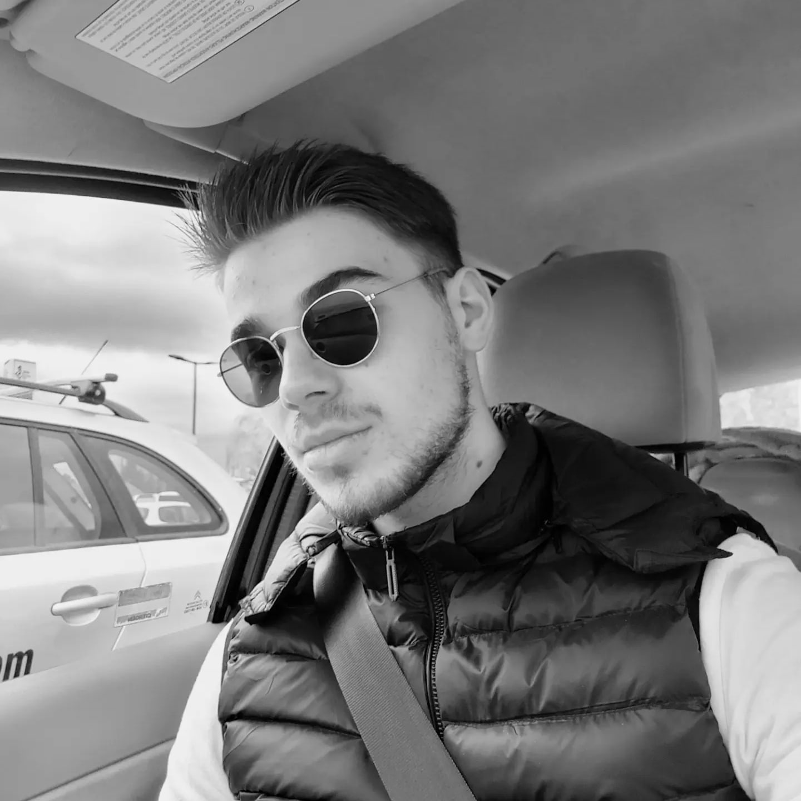
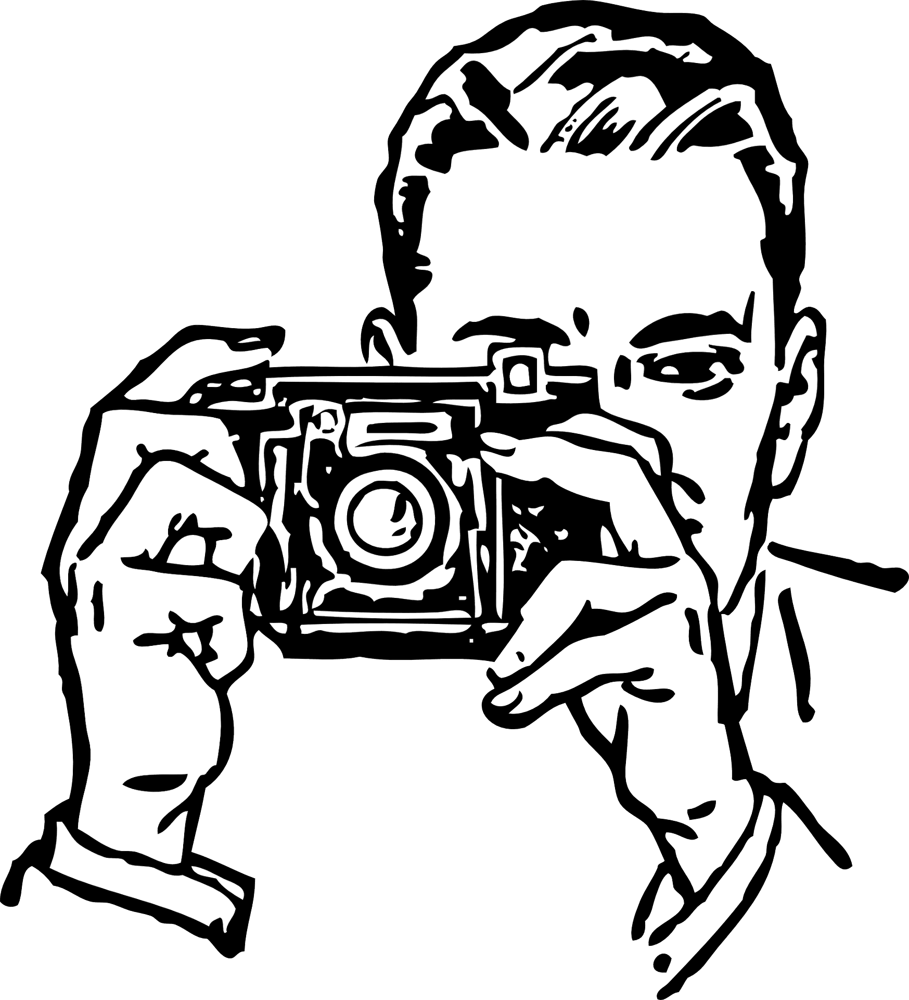
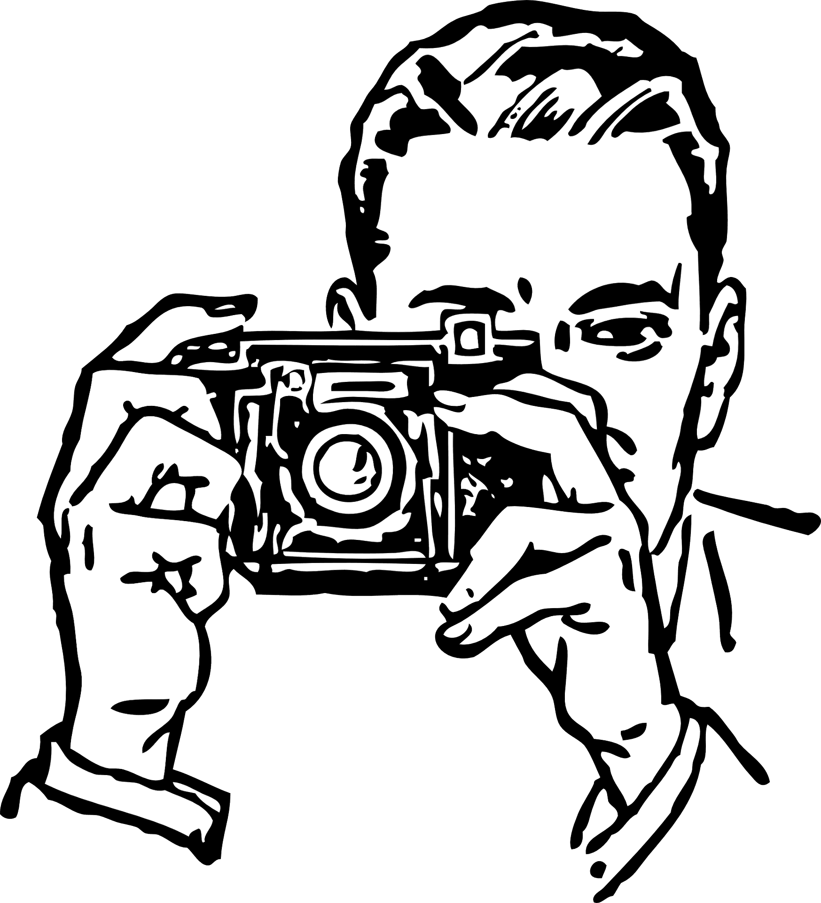

Lazar Voštić

Summary
I'am Lazar Vostic, from Serbia. 21 years old.
For me, hardwork and dedication in everything
I do is extremely important. I'am always going to
do my best to make a job done.
Education
- Psychology student and self taught programmer who loves to code.
- I finished the SoftUni programming basics course, after that I finished Python Mega Course on Udemy by instructor Ardit Sulce.
- As a self taught programmer I use plenty of sources on the internet every day to make myself better in coding.
Work experience
- Have experience in video editing, Flask and Django frameworks for Python, made 20 python projects.
- Other than that no work-experience, but I'am looking forward to an opportunity, so I can show my skills.
Skills
- Python, Django and Flask
- Video editing in Camtasia Studio 8
- Problem solving skills
- Critical thinking
- Creativity
Awards and Certifications
- SoftUni programming basics certificate.
- Python Mega Course certificate.
 
